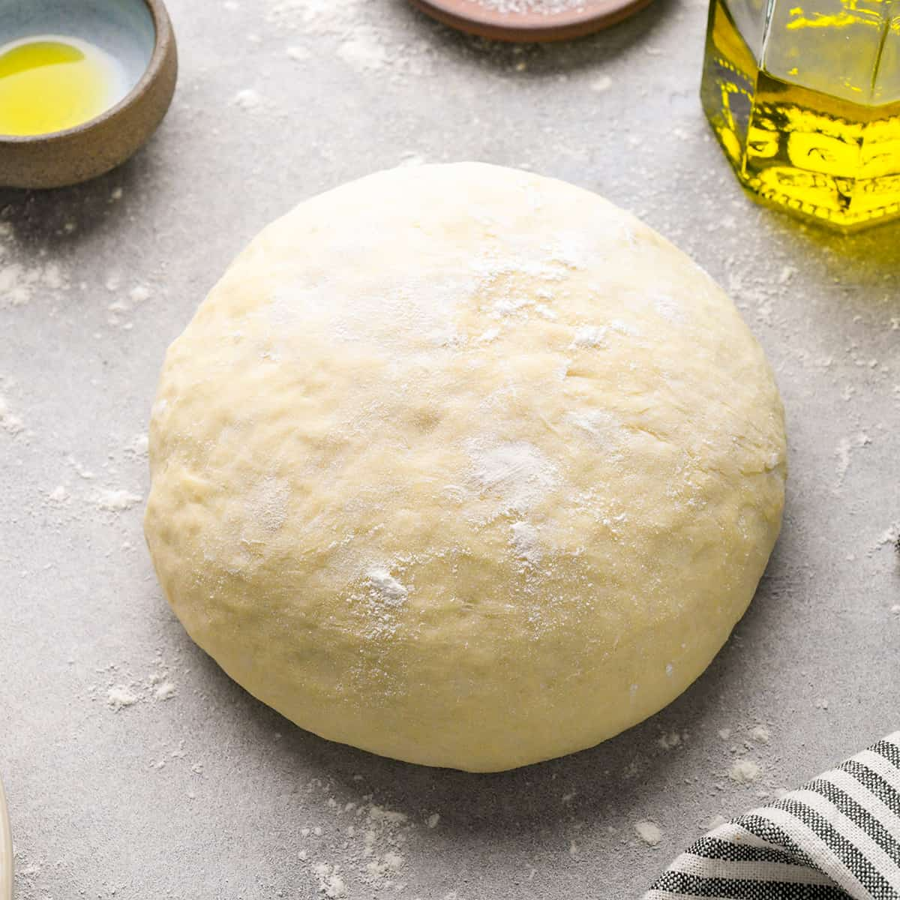

Pizza Dough

Description
This is an easy to make pizza dough that only take 20 minutes to set up.
Ingredients
- 2 cups flour
- 3/4 cup water
- 2 1/4 tsp dry yeast
- 1 tbsp sugar
- 3/4 tsp salt
- 1 tsp peprika
- 3/4 tsp onion powder
- Oragno as needed
- Olive oil
Steps
- Add 2 1/4 tsp of dry yeast 3/4 cup of warm water amd 1/2 tbsp to a bowl and cover for 5 min.
- Whlie that sits add 2 cups of flour, 3/4 tsp of salt, 1/2 tbsp of sugar, 1 tsp of peprika, 1/2 tsp onion powder, and Oragno to a bowl and mix.
- Once the 5 min. are up add all the Ingredients to a mixing bowl and mix till firm.
- finally take the dough and put it in a bowl. Once in the bowl add olive oil to the top and cover in a warm place for 1 hour.